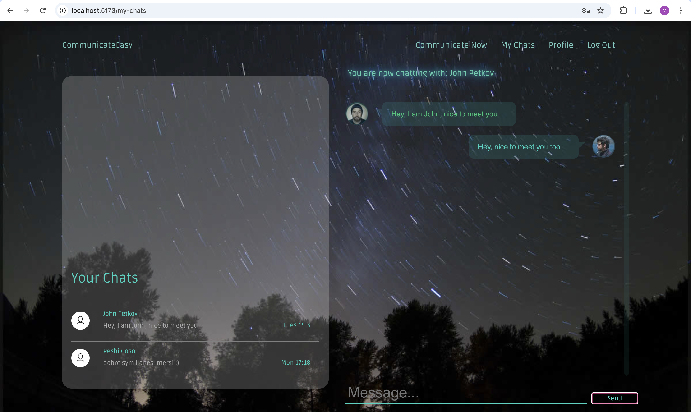

- Communicate Easy е приложение, разработено с ReactJS
- Уеб-приложението използва MongoDB като база данни за съхранение и управление на данни
- Предоставя на потребителите възможност да взаимодействат чрез съобщения
- Уеб-риложението включва функции като създаване на профил, което позволява на потребителите да персонализират своето изживяване
- С бутона Communicate Now потребителите могат лесно да се свързват с други и да започват разговори без усилие
- Функцията My Chats предлага удобен начин за преглед и управление на всички текущи разговори Линк към проекта в GitHub